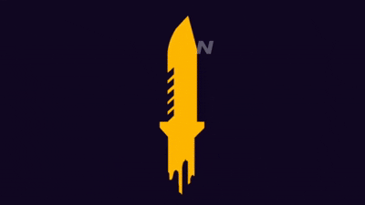
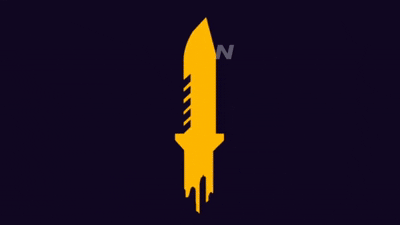

TENTANG
Garena Free Fire atau biasa disebut Free Fire (sering disingkat FF) adalah permainan battle royale yang dikembangkan oleh 111 Dots Studio[1] dan diterbitkan oleh Garena untuk Android dan iOS.[2] Permainan ini merupakan permainan piranti genggam yang paling banyak diunduh secara global pada tahun 2019.[3] Karena popularitasnya, permainan ini menerima penghargaan untuk "Best Popular Vote Game" oleh Google Play Store pada tahun 2019.[4] Pada Mei 2020, Garena Free Fire telah mencetak rekor dengan lebih dari 80 juta pengguna aktif harian di seluruh dunia.[5] Pada November 2019, Garena Free Fire telah mencapai lebih dari US$1 miliar dalam pendapatan seumur hidup di seluruh dunia.[6]